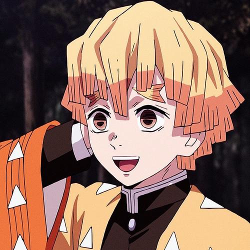

...
Zenitsu Agatsuma
@zenitsu_agatsuma - Jul 31
Zenitsu is a young boy of average height with fair skin and downward-sloped, scared-looking eyes that fade from soft brown to gold. He has short, yellow hair of varying lengths, cutting off squarely at the ends where it fades to a darker orange color, that falls in front of his face in uneven bangs, loosely resembling a bowl cut. Before he became a Demon Slayer, Zenitsu's hair was originally black, but it turned the color it is currently when he was struck by lightning during his training.

Zenitsu Agatsuma...
For some time following the battle at Mount Natagumo, his limbs temporarily shrunk due to the Spider Demon (Son)'s poison but were able to return to normal afterward thanks to the medicine given to him by Shinobu Kocho.
 22
22
 9
9
 37
37